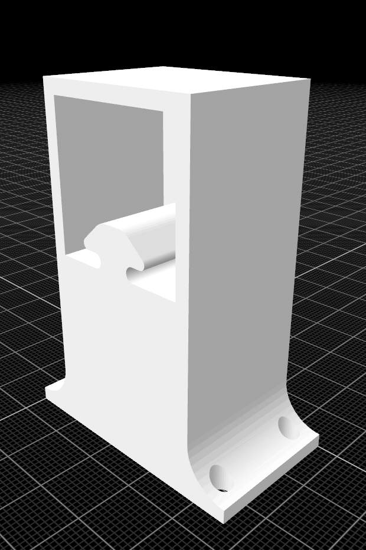
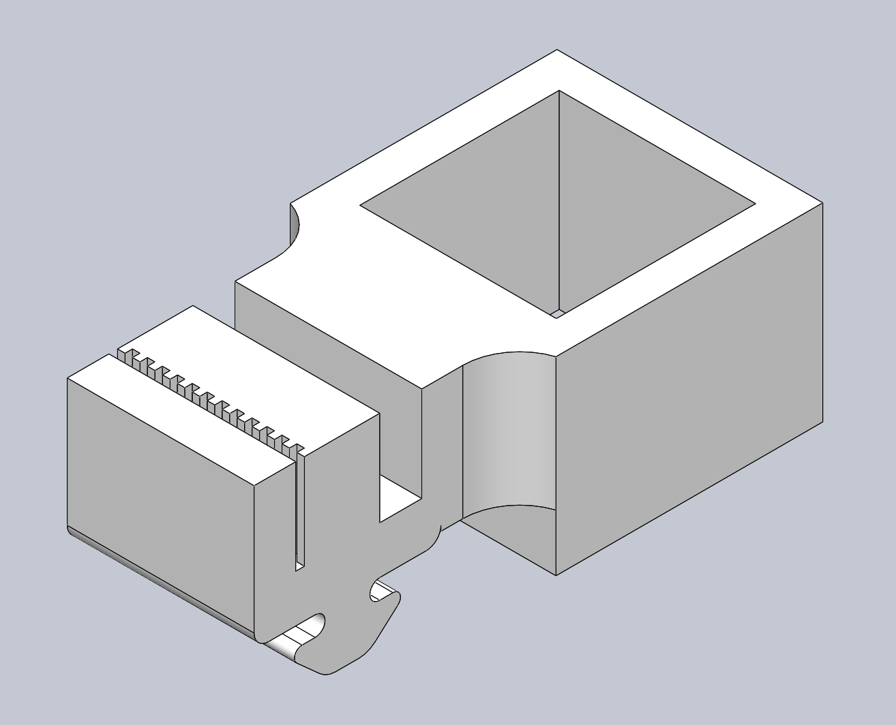

Electro-Mechanical Design
All red parts (brackets, carriages, carts) were designed in SolidWorks and 3D printed. The set of motors mounted on elevated platforms made from 2x4's, control the movement in the horizontal direction. The carriages on this axis attatch to carts with bearings on the bottom in order to smoothly support the vertical axes. Additionally, these carts house the motors used for movement along the vertical axes. All motion is acheived with stepper driven belts mounted to alimunum rails. The blocks are picked up with an electromagnet fashioned out of a bolt wrapped in copper wire; this requires around 3.5 Amps of current from an external power source, which is toggle on and off via relay. This toggling along with all other motor control is done with a microcontroller, commanded with GCode.
Cart houses the motors for the vertical axes, along with providing support for the vertical alimunum bars, and mounting points for the bearings which allow for the entire aparatus to slid along the horizontal axes. The four screw holes secure the motor to the part. Two bearings were mounted on the bottom, using the two holes shown along with a third bearing and hole, which are obstructed in the current view.
Bar Mount holds the horizontal axes off of the ground, as well as keeping them stable and offering a mounting point for the belt bearings.
Motor Mount houses the motors for the horizontal axis. The top screw holes secure the motor to the part and the bottom screw holes secure the part to the ground.
Carriage moves along the aluminum bars using the grove at the bottom. The ridged indent is used to attatch to the belt and the open groove allows the belt to pass through in the other direction unobstructed. The sqaure hole to the right is fitted to hold one of the aluminium rails.
Rapid Prototyping

Casting and Molding
I designed a mold for a stamp in SolidWorks then 3D printed it and cast a silicon model with it. After testing the silicon stamp, I designed and 3D printed a tow piece enclosure for the silicon. Finally, I attatched the two pieces with glue.
Heat Tool Design
A 20 gauge nichrome wire heats up enough to cut foam when 4.3 Amps of current is passed through it. This fact can be utilized to make a heat tool which can carve things out of foam. However the wire becomes much too hot to hold and if the ends are touched together it short circuits. To solve these problems we can make a heat proof enclosure with an on/off switch. First I designed a two piece enclosure in SolidWorks. The two pieces attatch with pins and incluse holes for the wires and switch, in order to maxamize ease of repair and disassembly. I then designed a custom mold to fit in the designated space in the enclosure. After 3D printing the enclosure and mold, I created the main nichrome wire piece by bending 6 inches of nichrome wire into the correct shape and attatching copper wire leads to the ends. I then cast around it in the mold with epoxy. The mold itself is designed to be part of the final product rather than being peeled off. Finally I put all of the components together and soldered the wired connections. It successfully cut through foam after testing.
Mechanics